Spring data JPA/Hibernate: Những sai lầm rất dễ gặp phải

Điều tuyệt vời của JPA(Java Persistence API) hay ORM(Object-relational mapping) là nó giúp bạn có thể quên đi những thao tác với RDBMS(Relational database management system), nhưng điều tồi tệ về JPA cũng chính là điều đó. Bạn sẽ đắm chìm trong những câu lệnh Java, câu lệnh JPQL, HQL mà quên đi những câu lệnh SQL được sinh ra đang âm thầm kéo chương trình của bạn xuống đáy.
Và ngoài những lỗi chủ quan do chưa đủ kiến thức về thư viện, thì những thư viện như Spring Data JPA/Hibernate, khách quan mà nói thì chúng không hề hoàn thiện (nếu hoàn thiện rồi thì cần gì suốt ngày update). Thư viện là của người ta, nhưng người phải nhận lỗi lại chỉ có bạn, nên phải tự biết lo cho chính mình.
Những điều dưới đây phụ thuộc rất nhiều vào loại database, phiên bản của Spring Data JPA hay Hibernate. Do vậy, nó có thể không tuyệt đối đúng với trường hợp của mọi người, nhưng hãy luôn coi chừng chúng.
Thứ nhất, bỏ quên Eager Fetching
Thời điểm đầu tiên khi sử dụng Hibernate, mình không hề biết: Fetching Type mặc định của ManyToOne là EAGER Fetching. Một ngày đẹp trời, sếp quay ra hỏi: “Sao đoạn này select có một record mà câu SQL nó dài 2 trang A4 với 30 câu JOIN thế này?”. Lúc này mới té ngửa ra đi tìm hiểu, cảm giác mình rất chi là “gà”.
EAGER Fetching là một tính năng rất hay của Hibernate, nó giúp bạn sử dụng ORM một cách tự nhiên hơn.
Ta thử với các bảng dưới đây
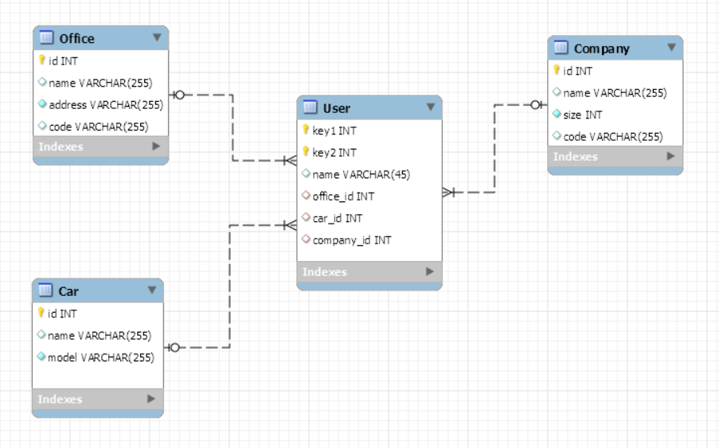
Hibernate là ORM, bạn query để lấy ra User, thì một cách tự nhiên nhất, bạn sẽ lấy ra được Office.
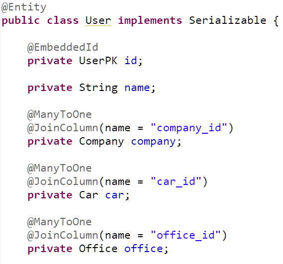
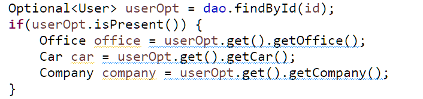
Điều này có lợi khi bạn là người chưa hiểu nhiều về Hibernate hoặc cần phát triển chương trình một cách nhanh chóng.
Nhưng, cái giá phải trả là không hề nhỏ. Đây là câu SQL được sinh ra:
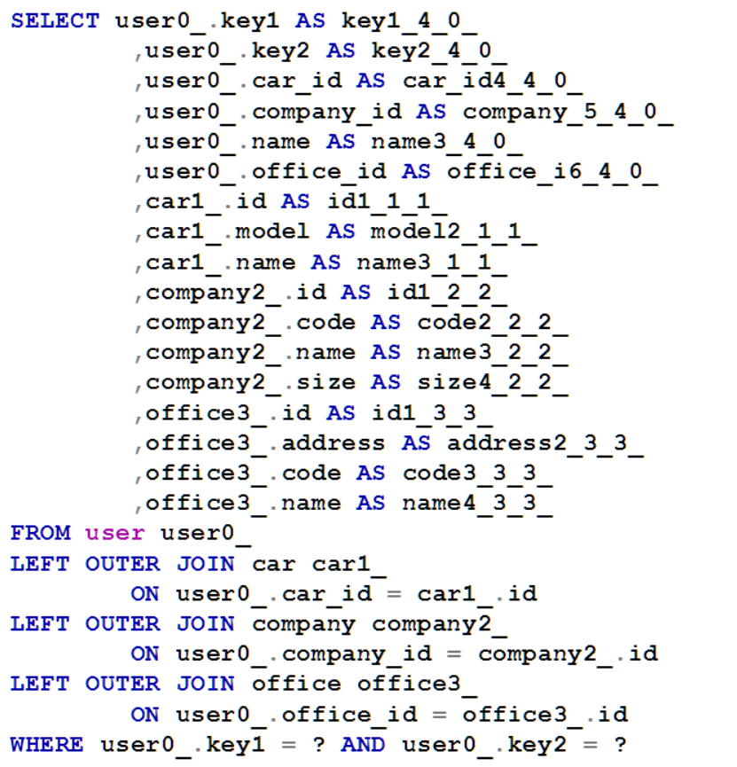
rất nhiều column được select và câu lệnh này join với hết các bảng. Đây mới là trường hợp đơn giản, còn trên thực tế, các bảng có thể có liên hệ với nhau nhiều hơn. Bảng User có quan hệ n-1 đến nhiều bảng hơn nữa, trong đó có Office, Office có thể có quan hệ n-1 với bảng khác, và cứ thế, câu lệnh của bạn sẽ có hàng dài join. Đúng là dùng thì dễ, nhưng để dùng tốt lại là chuyện khác.
Như đã nói ở trên là mình đã gặp trường hợp Hibernate sinh ra câu lệnh join với hơn 30 bảng(80% số bảng trong database) với chỉ một câu query ra từ entity, và trong hầu hết tình huống thì đó không phải là điều mình(chúng ta) cần, query như vậy sẽ làm giảm performance rất rõ rệt. Đây là điều mà khi start code dự án được 6 tháng, cả đội Dev mới phát hiện ra.
Và trừ khi bạn dùng native SQL hoặc chọn từng property của User entity để lấy ra, còn nếu không, bạn hoàn toàn không thể tránh được các câu lệnh join ở trên, đây cũng chính là một “điểm chết” của Eager Fetching Type này. Bạn rất khó để thay đổi nó!
Hãy đọc thêm về Fetching type của Hibernate trong phần reference để hiểu rõ hơn(mình hơi lười viết), tránh lỗi trên và lỗi N+1 Query, một lỗi vô cùng phổ biến trong Hibernate sẽ được nói ở dưới.
Cách khắc phục
Khuyến khích dùng Lazy Fetching cho hầu hết các trường hợp(trừ khi bạn có lý do thật đặc biệt). Với trường hợp ManyToOne hay OneToOne, hãy cài đặt Lazy Fetching. Còn trường hợp OneToMany và ManyToMany thì đừng làm gì cả, mặc định nó đã là Lazy Fetching rồi.
Không nên
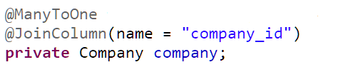
Nên
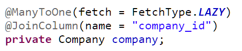
Khi bạn viết câu select, bạn có thể tùy ý chọn lựa việc join lấy ra những property nào(hoặc entity nào), join với bảng nào, tất cả đều nằm trong tay bạn.
Thứ hai, không lấy ra những thông tin cần thiết từ các bảng quan hệ
Cuộc sống luôn có những điều trái ngang!
Nếu bạn sử dụng Lazy Fetching như ở trên thì lại gặp trường hợp org.hibernate.LazyInitializationException, hoặc đau đớn hơn là vấn đề N+1 query âm thầm tiêu diệt chương trình của bạn một cách chậm rãi.
LazyInitializationException và N+1 query
Các vấn đề này xảy ra do đâu? Cùng xem ví dụ bên dưới.
Giả sử ta có bài toán cần lấy ra thông tin của user, bao gồm cả company của user đó. Cùng nhìn lại đoạn mapping của User entity:

và code lấy ra thông tin
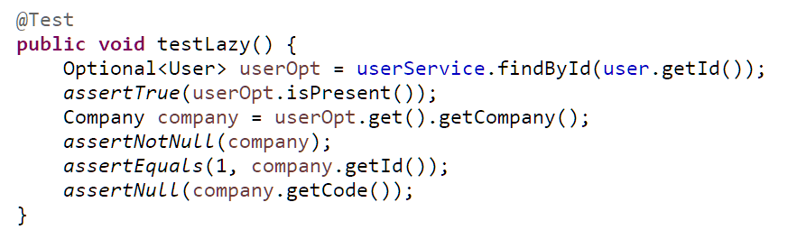
Nên nhớ fetching type của association Company đã là Lazy, sẽ không còn câu lệnh join với bảng Company nữa, giờ SQL sẽ như sau:
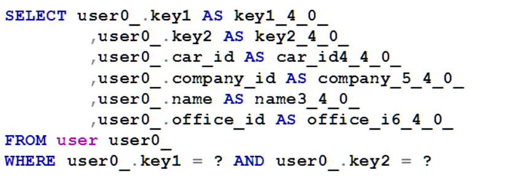
Hãy để ý trong trường hợp trên, Hibernate sẽ lấy tất cả các column của bảng User, bao gồm cả các FK(car_id, office_id và company_id). Dữ liệu trong bảng User là
car_id = *null;*
office_id = *null;*
company_id = *1;*
khi nhận thấy FK company có giá trị, Hibernate lập tức khởi tạo một object Company(dù ta chưa hề join) và gán id cho nó bằng 1. Điều đó có nghĩa là ta có thể lấy ra id của company object từ user một cách bình thường, nhưng code của company đó thì không.

Hãy hiểu lỗi này đơn giản rằng: nếu bạn phải viết những câu SQL lấy ra cả user và company mà không phải join(không chơi cross join luôn), bạn phải lấy ra company_id từ bảng User, sau đó lại lấy giá trị đó để select tiếp trong bảng Company.
Hibernate cũng làm tương tự như vậy.
Lấy ra tất cả các trường của bảng User, bao gồm cả FK
FK nào null thì bỏ qua, nếu không null thì tạo ra một đối tượng, gán FK vào, trong trường hợp này là company_id.
office = null car = null company = ???
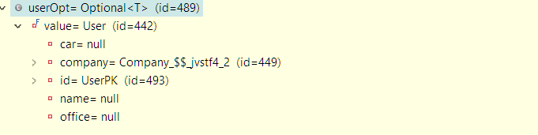
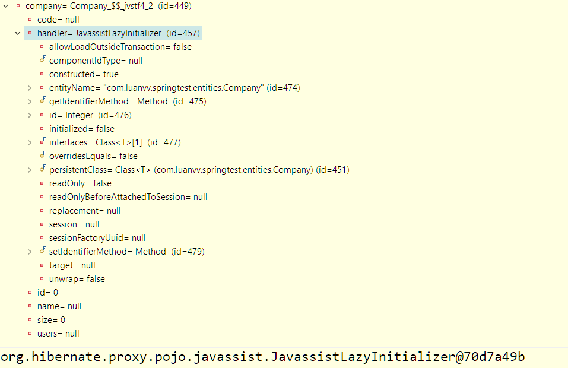
Vậy là Hibernate đã khởi tạo company bằng một instance của một class hơi khang khác(proxy object) so với của ta khai báo, từ đó mà nó có thể làm thêm điều bên dưới
- Chưa vội select bảng Company ngay. Đến khi bạn lấy ra bất kỳ trường nào ngoài PK(ở đây mình thử lấy ra code) thì Hibernate sẽ cố gắng gọi truy vấn đến bảng company và lấy đầy đủ thông tin hơn.
Tai nạn xảy ra ở đây là để truy vấn database, Hibernate phải có session(hay với database thì nó là connection), mà session thì phải mở thì mới có, chứ không mở hoặc đóng mất tiêu rồi thì nó bó tay, đấy là lý do tại sao message trong exception lại là no Session.
Thử thêm một đoạn code hơi kì cục vào Service method
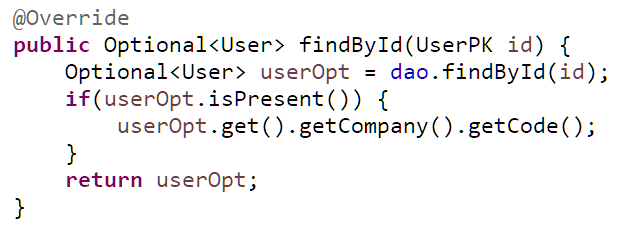
và chạy lại đoạn test, ngoài câu lệnh select user, thêm một câu SQL nữa sẽ được sinh ra
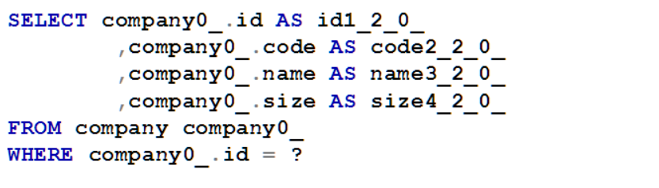
và lỗi đã biến mất.
Cách lý giải đơn giản là khi sự kiện lấy company code được viết trong service, khi session(connection) chưa được đóng thì Hibernate có thể lấy từ database một cách bình thường. Và cái giá phải trả, chính là thêm một câu lệnh SQL nữa.
Đây không phải là giải pháp tốt nhất trong trường hợp này! Tại sao? Vì đây chính là nguyên nhân của N+1 query.
Nếu bạn cho rằng thêm 1–2 câu query có là gì, thì…bạn nói đúng rồi đấy. Nhưng thử tưởng tượng, bạn lấy ra không phải 1, mà là 100 user, khi đó ta chỉ cần 1 câu query để lấy ra cả danh sách 100 user, nhưng xui xẻo thay là ta lại mất 100 query tới Company table như trên nữa để lấy ra company của từng user một(bỏ qua cache).
Vậy là, bạn chỉ cần 1 câu query để lấy ra N entity chính, nhưng lại mất N câu query nữa để lấy ra đối tượng quan hệ của nó, tên N+1 query từ đó mà ra.
Cái nguy hiểm của N+1 query chính là bạn sẽ không nhìn thấy bất kỳ exception nào hoặc thậm chí trong suốt thời gian phát triển thì chương trình vẫn chạy “ầm ầm” theo như các dev nói. Nhưng đến lúc hàng đống data test hoặc thậm chí đưa lên môi trường production, khách hàng đợi 5' chưa thấy mặt website thì cả đội rất dễ đi bán muối.
Cách khắc phục
- Dùng câu lệnh FETCH trong JPQL/HQL.
Đây là cách mình hay dùng nhất, vừa gọn, vừa tường minh, lại vừa đơn giản.
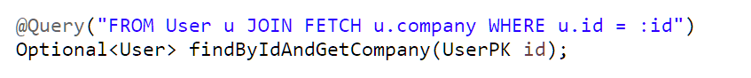
Câu lệnh SQL được sinh ra khá giống với tùy chọn Eager Fetching
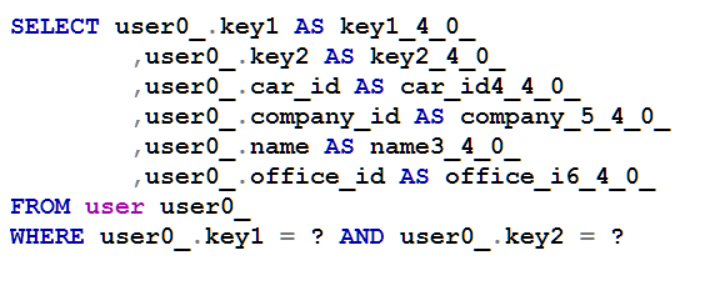
Có rất nhiều cách mà không biết vì vô tình hay cố ý mà Spring tự động lấy ra dữ liệu cho bạn tương tự khi viết thêm FETCH. Nhưng do nó quá “tùm lum” nên thôi, mình cứ viết FETCH vào cho chắc.
2. Dùng EntityGraph
Giả sử ta có database như sau:
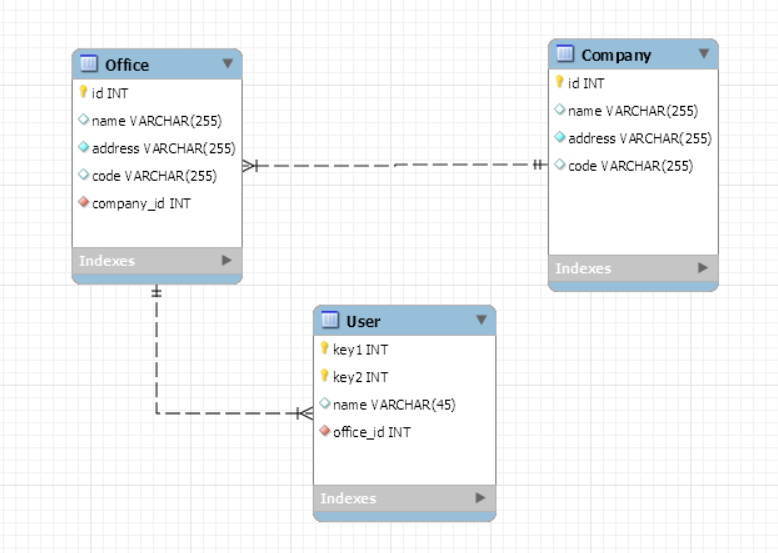
Mỗi company có nhiều office, mỗi office lại có nhiều user. Giờ mình cần lấy ra đối tượng company, đồng thời lấy ra tất cả office của company đó, và tiếp nữa là lấy ra tất cả các user của mỗi office.
Ví dụ có thể thấy như dưới đây, mong muốn chương trình in ra đầy đủ office và user.
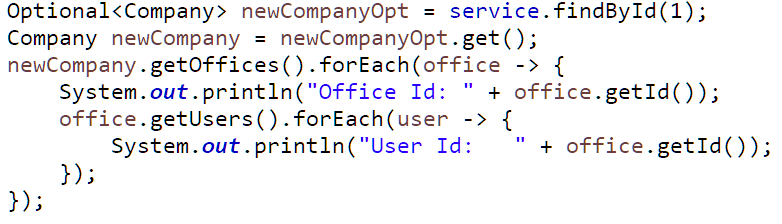
Nhiều bạn chưa nắm rõ về Hibernate, rất dễ mắc lỗi N+1 query hoặc LazyLoad do không chú ý. Cũng có bạn chọn giải pháp dùng nhiều câu SQL để lấy ra. Nhưng như vậy thì thường quá, dưới đây mình chỉ dùng duy nhất một câu SQL để lấy ra tất cả!
Với yêu cầu bài toán này thì bạn hoàn toàn có thể dùng chỉ 1 câu HQL(cũng chỉ là một câu SQL) để lấy ra tất cả, sau đó dùng code Java để nhóm lại. Đây là cách trước đây mình hay dùng. Nhưng cách này không hay khi bạn phải suy nghĩ câu HQL quá đau đầu, lại còn phải viết Java để nhóm lại cũng choáng váng không kém. Nói chung là cũng tầm thường không kém cách trên(thế mà trước mình dùng suốt đấy). Ơn giời, hãy để JPA/Hibernate làm cả 2 việc đó giúp bạn bằng EntityGraph.
EntityGraph sẽ giúp bạn lấy ra những đối tượng association một cách tự động rất dễ dàng. Nghe có vẻ giống Eager fetching? Không hề, với EntityGraph, đầu tiên là bạn có thể tùy chọn mối liên hệ giữa nhiều entity, như một graph vậy, từ entity này link sang entity khác, rồi từ entity đó lại link sang entity khác nữa. Và điều khác biệt nhất so với Earger fetching, là bạn có thể lựa chọn có sử dụng hay không(và mình thích được lựa chọn.).
Cùng xem cách làm
Bước 1: Ở Company entity, ta thêm anonnation NamedEntityGraph

Đặt tên là “graph.Company.offices”
Đặt node(có thể có nhiều node) offices và lấy ra tất cả đối tượng office của company. Và node này lại có thể có nhiều subgraph, tức là từ mỗi office ta có thể lấy ra nhiều thứ khác nữa, ở đây ta lấy ra tất cả các user của mỗi office.
Bước 2: Khai báo sử dụng trong repository

Với Query method, bạn có thể trực tiếp sử dụng EntityGraph anonnation. Còn nếu bạn dùng JPQL/HQL thì bạn phải lấy EntityGraph thông qua EntityManager và dùng method setHint
Đoạn code lấy ra kết quả
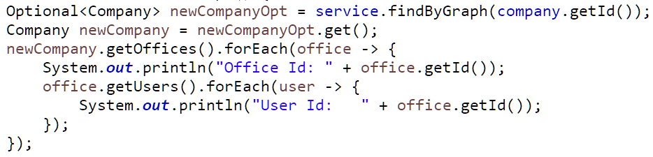
Đã xong, bây giờ chạy nó, 1 câu lệnh SQL duy nhất được tạo ra:
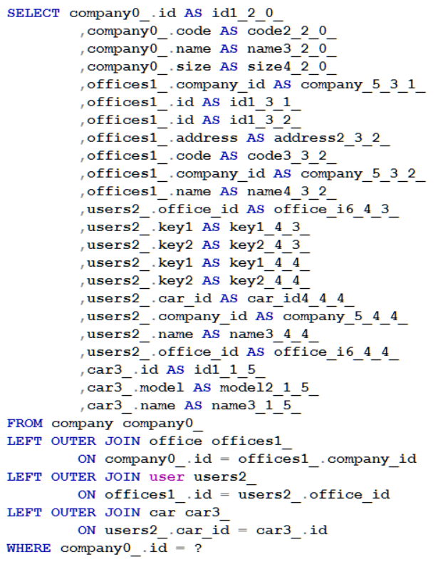
Và đây là output:
Office Id: 1
User Id: 1
Office Id: 2
User Id: 2
Rất ổn đúng không!
Cả LazyInitializationException và N+1 query đều không phải thiếu xót hay sai lầm của Hibernate, nó là một tính năng. Nhưng cần hiểu rõ “tính năng đó” để tránh những cái ngớ ngẩn trên.
Thứ ba, dùng Hibernate như JDBC
Hãy dùng Hibernate đúng cách và hiệu quả nhất.
Điểm lợi lớn nhất của một ORM là nó giúp bạn quên đi những đối tượng database mà tập trung vào việc thao tác thông qua các model. Tất cả các công nghệ CRUD thao tác trên model, cache, custom SQL, sort, auditing date, graph… đều “đổ sông đổ biển” nếu bạn chỉ dùng native SQL!
Tại sao bạn lại bê nguyên một framework đồ sộ như Hibernate chỉ để nó mở connection tới database cho bạn, và bạn thì chỉ dùng nó để gọi đến store procedure của database?
Khi bạn sử dụng một công cụ quá phức tạp cho những điều đơn giản, hoặc nó không phù hợp với bài toán mà bạn cần, đừng ép nó! Các vấn đề về thời gian boot (nhiều thư viện hơn đồng nghĩa với việc JVM phải load nhiều class hơn), cách xử lý qua nhiều tầng gây chậm chương trình không cần thiết, nhiều vấn đề phải học hơn (nhiều chức năng quá cũng nguy hiểm).
Kinh nghiệm của mình là: đừng áp đặt thói quen sử dụng của bạn lên những dự án không phù hợp. Nếu bạn cần một dự án siêu nhỏ và siêu đơn giản, hãy dùng JDBC đơn thuần. Nếu dự án phải viết một lượng lớn native SQL hoặc dùng store procedure nhiều hơn là thao tác với model, hãy nghĩ đến Mybatis, jdbcTemplate, chúng cung cấp những công cụ rất tốt cho việc viết native SQL. Một số trường hợp bạn cũng có thể dùng kết hợp giữa nhiều framework(ví dụ dùng cả Hibernate và JDBC Template), không vấn đề gì cả.
Thứ tư, sử dụng compose primary key một cách bất cẩn
ORM cung cấp những tiện lợi cho việc thao tác với RMDB. Không cần viết native SQL, ta vẫn có thể thao tác với database thông qua các model object và dùng method của JPA, JPQL, HQL, Criteria, Example, Specifications,… Nghe có vẻ lý tưởng, nhưng chính việc bỏ quên native SQL và sử dụng model object lại chính là nguyên nhân gây ra nhiều lỗi ngớ ngẩn. Dưới đây là một trong những lỗi đó.
IN Operator là một operator khá phổ biến trong SQL, trong nhiều trường hợp nó còn cho performance tốt hơn Equal Operator(=). JPA/Hibernate cũng hỗ trợ bạn sử dụng IN Operator. Ta cùng xem ví dụ.
Ta có hai bảng Account và User(một số trường có thể hơi khác do mình quá lười để viết thêm). Bảng User đặc biệt hơn, với 1 compose primary key gồm 2 trường: key1 và key2
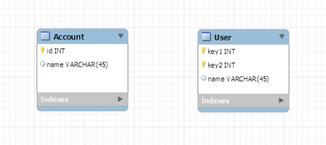
Thử viết câu HQL dùng IN Operator với bảng Account
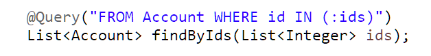
Và dưới đây là câu lệnh ta nhận được khi Hibernate compile ra native SQL
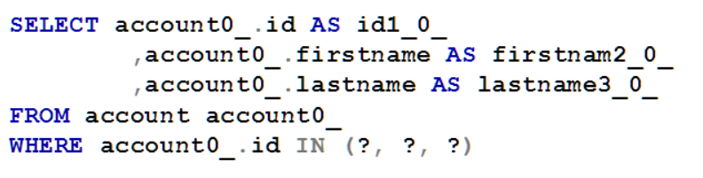
Câu lệnh SQL trên sẽ chạy bình thường và cho ra kết quả chính xác mà bạn mong muốn.
Bây giờ ta thử với bảng User, bảng có 1 compose primary key(key1 và key2). Vì ta thao tác với model object nên chỉ cần biết identity key của User là id, thực tế trong RDBMS là gì, không quan trọng, lý thuyết là vậy.
Dưới đây là một đoạn code mapping của bảng User
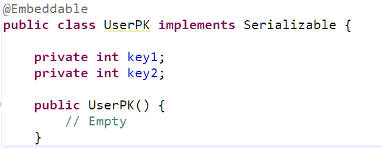
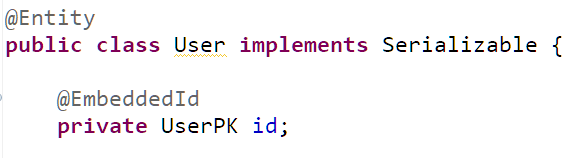
Và đây là câu HQL dùng để select
Trông có vẻ ổn!
Câu lệnh HQL trên sẽ được Hibernate compile ra SQL một cách bình thường. Đây là kết quả:

Câu lệnh trên rõ ràng là sai. Cú pháp hợp lệ nhưng kết quả thì không.
Câu lệnh SQL nên là:
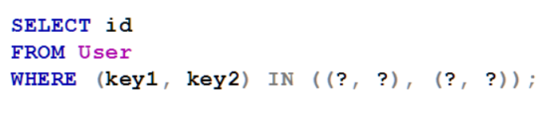
Trường hợp tương tự khi bạn sử dụng điều kiện hỗn hợp, trong đó có một điều kiện sử dụng với composite primary key
Ta thử dùng một method trong repository của User entity
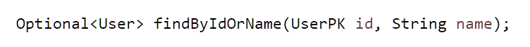
Câu lệnh SQL được compile ra, sai hoàn toàn:

Thử dùng HQL và trick thêm dấu ngoặc
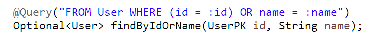
nhưng kết quả không khác
Tương tự thì Criteria, Specifications cũng chung một kết cục.
Cách khắc phục
Cho đến hiện nay thì mình vẫn chưa tìm ra cách khắc phục ngoài việc dùng cách stupid nhất là native SQL thay thế.
Đây chỉ là một trong những ví dụ cho bạn thấy, dù Hibernate không hề có biểu hiện lỗi compile hay runtime thì cũng không có nghĩa là kết quả bạn ra đã đúng. Hãy coi chừng.
Thứ năm, không lường được kết quả trả về
Trong suốt quá trình sử dụng Spring JPA, mình đã gặp một số bug thậm chí có bug thật sự là “sấm sét” liên quan đến kiểu trả về khi thao tác bằng Spring JPA. Cùng xem một số dưới đây:
- Nếu bạn chỉ định kiểu trả về là Collection hoặc Array thì chắc chắn nó không bao giờ null
Mình thấy nhiều bạn hay code như sau
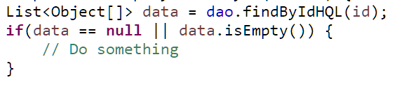
Bạn nên bỏ điều kiện kiểm tra null, vì dù thế nào đi chăng nữa, data cũng sẽ không bao giờ null.
2. Thấy trả về null, cứ tưởng là record không tồn tại
Tình huống là ta chỉ cẩn lấy ra một field của entity, code như sau:
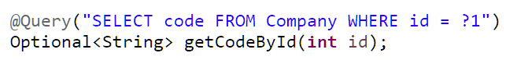
Có bạn code như thế này:
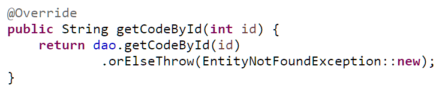
Nếu bạn code bằng JDBC đơn thuần, sử dụng ResultSet hoặc sử dụng query thông qua EntityManager thì rõ ràng trường hợp không có record nào và record chứa một field mang giá trị null nó là khác nhau hoàn toàn, nhưng Spring Data JPA trong cách viết này thì không, nó không phân biệt.
Thử đoạn test
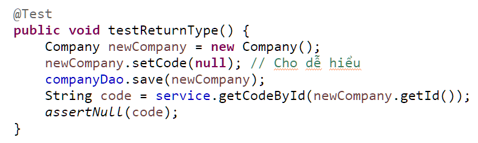
Mình thêm một company(với code là null) vào database, sau đó lấy ra bằng method getCodeById ở trên, mong muốn là code này sẽ là null, nhưng kết quả lại là exception javax.persistence.EntityNotFoundException(nhưng rõ ràng Company có tồn tại mà?), khá cay đắng nhưng sự thật là vậy.
Giờ thay vì dùng một id có tồn tại, mình chọn một id không tồn tại
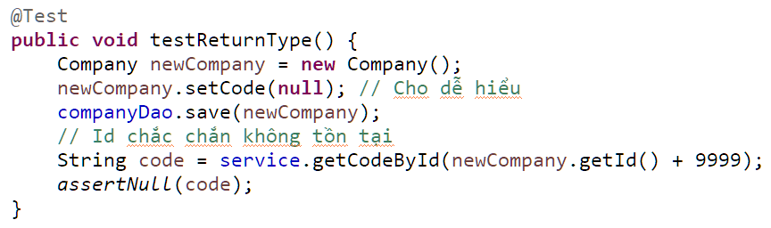
Kết quả vẫn là exception javax.persistence.EntityNotFoundException.
Làm sao phân biệt? Câu trả lời là không thể nếu bạn select như vậy. Hãy select thêm trường để tạo sự khác biệt
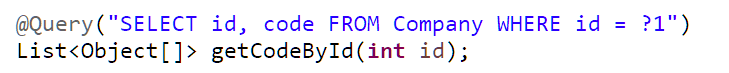
Nhiều bạn sẽ thắc mắc ở đây là tại sao không lấy ra mảng Object thôi, tại sao lại phải list mảng object. Thì câu trả lời là dù bạn khai báo kiểu trả về là Object[] thì trên thực tế trả về vẫn là Object[][], và bạn phải cast rất nhiều mới lấy ra cái cần, vậy nên hãy luôn trả về List<Object[]> dù bạn chỉ lấy 1 record(tuyệt đối đừng bao giờ là Object[] với nhiều field)
Sửa service như sau:
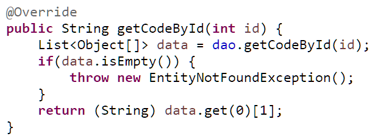
Giờ thì kết quả đúng ý rồi.
3. Khai báo một đằng nhưng trả về một nẻo
Đây thực sự là một bug “sấm sét” của Spring Data JPA(hay có lẽ là cả Java thì đúng hơn) mà mình đã gặp phải.
Chẳng là mình có một list id được lưu kiểu String từ thư viện bên thứ ba trả về, mình cần phải so sánh nó với các id(kiểu số nguyên) có trong database.
Cách mình làm:
Lấy ra các id trong database với kiểu String(có lẽ là nó sẽ cast từ int sang String được vì id của company khai báo là int)
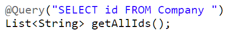
Giả sử trong database hiện đang có 10 company với id từ 1 đến 10.
Thử với test dưới đây
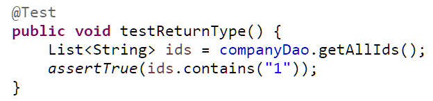
Đáng lẽ test trên phải pass, nhưng kết quả lại fail! Tại sao? Rõ ràng trong database có id từ 1 đến 10, ids “nên” có dạng
["1", "2", "3", "3", "4", "5", "6", "7", "8", "9", "10"]
thì chắc chắn nó phải chứa “1”.
Nhưng, mình đã bị chúng lừa. Biến ids vẻ ngoài là List<String>, nhưng “tâm hồn” lại là List<Integer>
Thử đổi lại
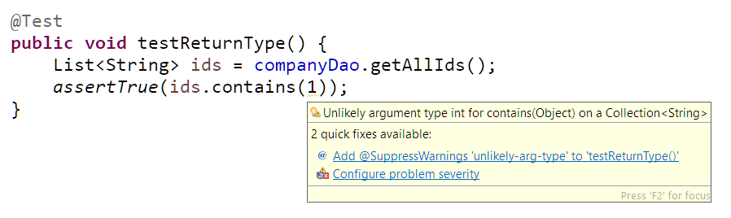
đoạn code có warning, không vấn đề, nó vẫn pass.
Giờ ta không trả về String hay Integer nữa, trả hẳn về Double
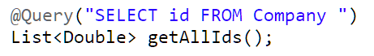
thì trên thực tế cái được trả về vẫn là List<Integer>
Mình chưa có dịp tìm hiểu sâu nguyên nhân, nhưng đoán là nguyên nhân đến từ cả hai, cách convert dữ liệu từ database sang Java type của Spring và cách dùng “tùm lum” Generic của Java(do yêu cầu phải tương thích ngược với các version cũ). Nhưng điều quan trọng không phải nguyên nhân, tốt nhất trong trường hợp này, hãy trả về đúng kiểu của field được khai báo trong entity.
Hiện đại quá cũng nhưng cũng thật nguy hiểm. Mình cảm nhận thấy là Spring Data JPA đang có rất nhiều vấn đề với kiểu trả về này(Hibernate đỡ hơn), bạn nào mà yếu là rất dễ xẩy chân, cứ tưởng là ngon lành nhưng test “rờ” đến đây “chết” đến đó.
Chú ý là tất cả các cách mình kể ở trên, đó chỉ là những cách mình khuyến khích, bạn hoàn toàn có thể sử dụng rất rất nhiều cách khác trong JPA/Hibernate để đạt mục đích, “đường nào cũng dẫn đến La Mã” thôi.
Tóm lại, khi sử dụng, cần chú ý
Hiểu rõ những thành phần của JPA nói chung và Hibernate nói riêng. JPA có rất nhiều, nắm được càng nhiều, bạn càng code nhàn hơn. Chưa cần hiểu sâu, hãy hiểu rộng trước để biết những feature, sau này có bài toán cụ thể còn lôi feature ra mà dùng.
Hiểu rõ cách mà JPA provider đối xử với database. Bạn nghĩ ORM hoàn toàn không phụ thuộc vào loại database? Tỉnh lại và quên mấy lời quảng đấy đi.
Luôn luôn, chú ý tất cả những gì JPA/Hibernate đưa lên và lấy về từ database: log câu SQL, binding parameters và binding results, có thể dùng thêm statistics để monitor thêm. Về phía database cũng phải monitor để kiểm tra: resources, câu SQL, số lượng connection… không nên quá tin những ông nào code Java.
Reference
Về Hibernate, khuyến khích mọi người nên follow website https://www.thoughts-on-java.org/ và đọc cuốn: Hibernate Tips: More than 70 solutions to common Hibernate problems
10 Common Hibernate Mistakes That Cripple Your Performance